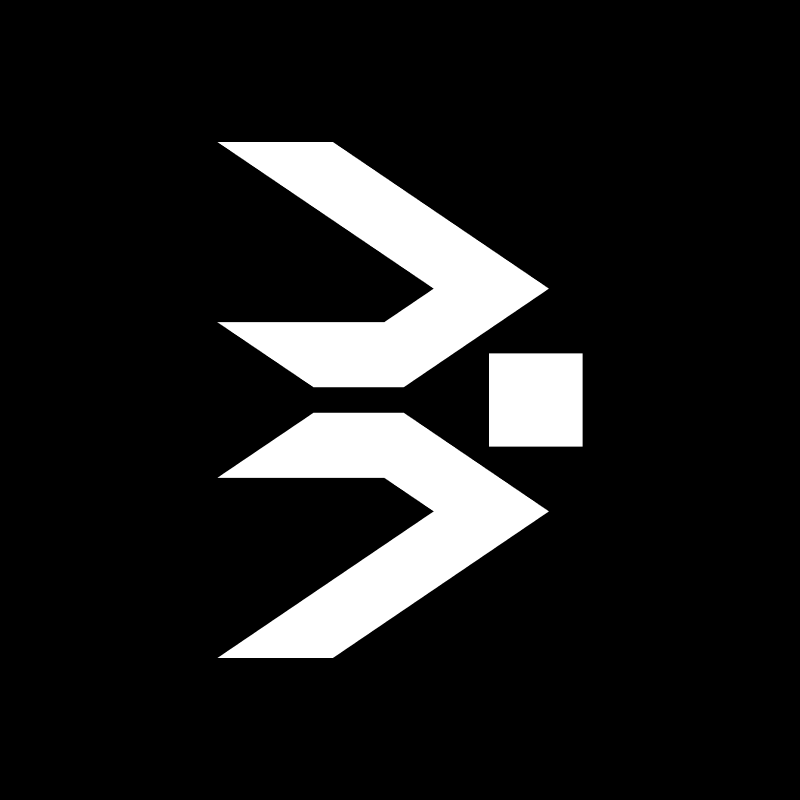
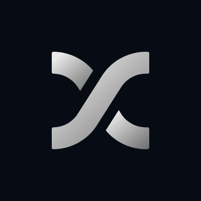
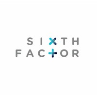
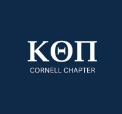

Electrical & Computer Engineering @ Cornell University
About Me
I'm Rohan, a third-year Electrical and Computer Engineering student at Cornell who likes building systems that are useful in the real world, not just impressive on paper.
At Cornell's College of Engineering, I'm pursuing a B.S. in Electrical & Computer Engineering, with an anticipated graduation in May 2028. My recent coursework includes Digital Logic & Computer Organization, Circuit Design & Analysis, Embedded Systems, Computer Systems Programming, Python, Data Science, Linear Algebra, Differential Equations, and Signals & Systems.
I grew up in Luxembourg in a very mixed French-Dutch-Indian family, so I've grown very comfortable in environments where cultures, languages, and ideas collide.
That pushed me toward engineering and problem-solving: I like to take human problems and turn them into structured, scalable solutions.
So far, that’s taken me through projects ranging from hardware/software integration to automation and CRM systems.
I’ve interned at Coalition Systems and Fini on engineering and AI workflows, built a Notion-based CRM at MIMCO for relationship managers, and worked on an EU-level research project exploring how AI can shape the future of public transport.
Experience

Engineering Intern
Coalition Systems (a16z SR 006) · May 2026 — Aug 2026
Engineered encrypted backend services for a defense collaboration platform supporting mission-critical operations.
Developed automation pipelines for internal tools to increase productivity by removing repetitive manual work.
Collaborated across product and engineering to design, implement, and deploy production-ready demo features.

AI Voice Agent Quality Assurance Intern
Fini (YC S22) · Jan 2026 — Apr 2026
Built and deployed 5+ AI demo agents for enterprise clients, translating requirements into conversational workflows.
Created automated QA pipelines covering 150+ scenarios to detect hallucinations, latency issues, and edge-case failures.
Improved STT/LLM response time and accuracy through prompt iteration, transcription analysis, and robustness testing.
Brand Intern
SideShift · Feb 2025 — Nov 2025
Supported the rollout of online marketing campaigns, driving the app to #24 in the iOS App Store ‘Business’ category.
Tracked engagement metrics and performance reports, driving a 15% increase in social media click-through rate.
Collaborated with student organizations to boost brand visibility on Cornell's campus through joint campaigns.
Digital Systems Intern
MIMCO Capital · Jul 2025 — Aug 2025
Produced a modular CRM platform in Notion with Make.com automations, reducing manual data entry by over 50%.
Automated database synchronization across multiple platforms, enabling observation of 1000+ clients in real time.
Delivered an interactive Figma-based adoption guide, improving onboarding efficiency and usability across teams.

Neuromarketing Intern
SixthFactor Consulting · Jun 2022 — Jul 2022
Analyzed data from 50+ sources, presenting insights to global clients such as Visa for its 2022 FIFA World Cup campaign.
Studied Gen-Z banking trends in the MENA region using AI-driven technology on 40+ participants, presenting insights.
Granted an international scholarship to apply neuromarketing tools and evaluate customer behavior across case studies.

Vice-President of Brotherhood
Kappa Theta Pi · May 2026 — Present
Elected Vice-President of Brotherhood, leading member engagement, mentorship, and internal programming for 50+ active members.
Organize chapter-wide events and initiatives designed to strengthen community, professional development, and member retention.
Previously selected as a Beta Class member through Kappa Theta Pi’s competitive recruitment process and completed its technical and professional development curriculum.
Director of Executive Board
International Student Association of Cornell University · Aug 2024 — Present
Serve on the 6-member Executive Board, shaping organization-wide strategy and operations to support Cornell’s 7,000+ international students.
Previously led a 15-member Internal Operations team, overseeing recruitment, event planning, and logistics for 75+ active members representing 40+ countries.
Launched a mentorship program and revamped internal communications to strengthen member engagement, connectivity, and organizational continuity.
Other Involvements
Cornell Running Club
The French Club
PREPARE Mentor
National Conservatory of Luxembourg
Projects
32-Bit Single-Cycle RISC-V CPU
Developed and implemented a 32-bit TinyRV1 CPU in Verilog, including datapath, control logic, register file, and ALU, then integrated 4 memory-mapped I/O interfaces to run custom RISC-V assembly programs on FPGA hardware.
Verilog
FPGA
RISC-V
Context: Cornell Hardware Project2026
FPGA Embedded Door Monitoring System
Designed memory-mapped interfaces connecting sensors and LEDs to an FPGA-based embedded system, and wrote TinyRV1 assembly firmware to coordinate peripheral I/O, state management, and hardware control.
Verilog
TinyRV1
Embedded Systems
Context: FPGA Embedded Build2026
BrainBreak
Prototyped an iOS productivity app that blocks social media until users complete short quizzes, integrating customizable learning modules, gamified engagement, and a streak-based system tested with early users.
iOS Development
UX/UI
Swift
Context: Personal Project2025
Team Icarus - F1 in Schools
Engineered the vehicle in AutoCAD, iterating on manufacturing constraints for optimized competition performance, and produced technical documentation evaluated by 20+ international judges that contributed to a 1st-place national finish.
AutoCAD
Manufacturing
Technical Documentation
Context: F1 in Schools STEM Competition2023 - 2024
Future Autonomous Vehicles Research
Researched AI-enabled autonomous transport solutions for EU infrastructure and presented findings to researchers and policymakers.
Machine Learning
Autonomous Systems
R&D
Context: Research at European Commission2021
Contact
Whether it's co-op, research collaboration, or a project, I'm always excited to talk about embedded systems and hardware start-ups. Reach out via email or drop a note with the form.